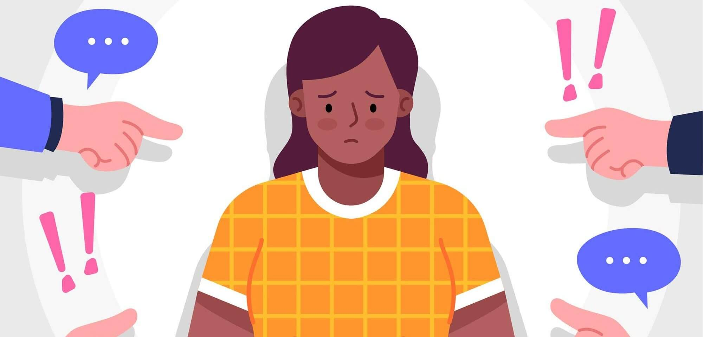

ტერმინი “ბულინგი" ინგლისური სიტყვაა და ქართულად ჩაგვრას/აბუჩად აგდებას ნიშნავს.
ეს არის არასასურველი, აგრესიული სახის ქცევა, რომელიც უმეტესად ვლინდება სკოლის ასაკის ბავშვებში.
„ბულინგი“ სოციალური მოვლენაა, რომელიც, როგორც სპეციალისტები ამტკიცებენ,
დამახასიათებელია ძირითადად ორგანიზებული ბავშვთა კოლექტივისათვის და პირველ რიგში ეს არის სკოლა. თუმცა, არასწორია მოსაზრება, რომ როლური ურთიერთობა „ლიდერი–გარიყული“ მხოლოდ სასკოლო ასაკიდან იღებს სათავეს და უფრო ადრეულ ასაკში მას ადგილი არ აქვს. დღესდღეობით არავისთვის წარმოადგენს საიდუმლოს, რომ მოზარდთა სოციალიზაციის პროცესი უფრო ადრე იწყება, ვიდრე ეს იყო წინა თაობაში. ასე რომ, როლური ურთიერთობები და თუნდაც ჯერ კიდეც გაუაზრებლად, მაგრამ სხვაზე ზეგავლენის მოპოვების სურვილიც ადრეულ, ჯერ კიდევ სკოლამდელ ასაკში იჩენს თავს.
„ბულინგი“ აქტუალური პრობლემაა როგორც მთელ მსოფლიოში, ისევე საქართველოშიც.
ეს ფიზიკური და ფსიქოლოგიური ძალადობის ფორმაა, რომელიც მოზარდ თანატოლთა შორის არის გავრცელებული და ერთი მხარის მიერ მეორის დაჩაგვრასა და დაცინვაში გამოიხატება.შედეგად კი ძალიან ცუდ მდგომარეობას ვიღებთ, ხშირ შემთხვევაში ბავშვების სწორი მიმართულებით განვითარება წყდება და ძალიან დიდი ფსიქოლოგიური პრობლემები ექმნებათ. ბულინგის შედეგები უშუალოდ შეიძლება დავუკავშიროთ თვითშეფასებას, უფრომეტად კი დაბალ თვითშეფასებას, რომელიც ძალიან უარყოფითად მოქმედებს პიროვნების განვითარებაზე.
ჩაგვრა/აბუჩად აგდება შეიძლება იყოს ვერბალური (მაგალითად, ნეგატიური, დამამცირებელი
კომენტარების გაკეთება, ყვირილი, ჭორების გავრცელება), ან ფიზიკური (მაგალითად, დარტყმა, ნივთების სროლა). ხშირად ჩაგვრა ემოციური ძალადობის ხასიათს ატარებს, მიმართულია რა დამცირებაზე, დამუქრებაზე, გამოძალვაზე, გაღიზიანებაზე. შესაძლოა ჩაგვრა განხორციელდეს დისტანციური გზითაც - სატელეფონო ზარით, მესიჯებით, ელექტრონული ფოსტით, ან სხვა ელექტრონული საშუალებებით (Cyber Bullying). შეუძლებელია გამოვყოთ ერთი მიმართულება, რომელიც უფრო მეტად მოქმედებს ადამიანზე, ნებისმიერი სახის ჩაგვრამ შეიძლება მიგვიყვანოს თვითშეფასების დაცემამდე.
სამწუხაროდ, ბულინგის მსხვერპლი ყოველთვის არ იწვევს საზოგადოებაში თანაგრძნობას.
ბავშვის სისუსტე და მისი ჩაგვრა ზოგიერთ შემთხვევაში გარშემომყოფთა ზიზღსა და მისი გარიყვის სურვილს იწვევს. მოზარდთა გარემოში შეიძლება ჩამოყალიბდეს ნეგატიური დამოკიდებულება სასკოლო ძალადობის მსხვერპლის მიმართ იმ პრინციპით, რომ „ყველაფერში თავადაა დამნაშავე, რადგან წინააღმდეგობას ვერავის უწევს“. თავად ჩაგრული კი ამ შემთხვევაში ძალიან მძიმე მდგომარეობაში ვარდება, რადგან გრძნობს აბსოლუტურ უიმედობას, სიტუაციის გამოუვალობასა და სრულ უმწეობას, რადგან განიცდის დაუძლეველ შიშს მჩაგვრელისა და იმ ახალი დამცირებების წინაშე, რომლებიც ჯერ კიდევ წინ ელის, ის გრძნობს სირცხვილს საკუთარი უმწეობის გამო. ხშირად, მოზარდი–მსხვერპლი ამ მდგომარეობაში საკუთარ თავსაც კი იდანაშაულებს, ფიქრობს რომ არაფერი არ შეუძლია, ამიტომ რაც მოხდა ამას ნამდვილად იმსახურებს.
ბავშვთა საზოგადოებაში ძალადობის მსხვერპლი შეიძლება გახდეს ნებისმიერი მოზარდი.
მაგრამ განსაკუთრებით დაუცველები არიან ბავშვები, რომლებიც განსხვავდებიან თავისი თანატოლებისგან როგორც ფიზიკური, ასევე ფსიქიკური მახასიათებლებით. რისკ–ჯგუფში ხვდებიან განსხვავებული ფიზიკური მონაცემების მქონე, თავისებური ხასიათისა და ქცევის, სხვა ეროვნების და ა.შ ბავშვები. ბულინგის მოტივაცია კი მრავალფეროვანია – შურისძიება, კონკურენცია, მიუღებლობა, მორჩილება ლიდერისადმი, სამართლიანობის აღდგენა, ხასიათის თავისებურებები.
ეს არის აგრესიული სახის ქცევა, რომელსაც განმეორებადი ხასიათი აქვს;
მჩაგვრელს აქვს მეტი ძალაუფლება ვიდრე დაჩაგრულს (უფრო ძლიერია ფიზიკურად, ან სტატუსით უფრო მაღლა დგას);
მჩაგვრელის ქმედება არის წინასწარ განზრახული;
მჩაგვრელი არ იღებს პასუხიმსგებლობას ჩადენილ საქციელზე და ხშირად აღნიშნავს, რომ მსხვერპლმა „დაიმსახურა“ ასეთი მოპყრობა.
ხშირ შემთხვევაში ბავშვი, რომელიც არის ჩაგვრის მსხვერპლი, არ საუბრობს საკუთარ პრობლემებზე მშობლებთან. თუმცა შეიძლება არსებობდეს ნიშნები, რომლებიც მიუთითებს იმაზე, რომ ბავშვს ჩაგრავენ და სჭირდება უფროსების მხრიდან მხარდაჭერა. ამ ნიშნების დროულად იდენტიფიცირებისთვის მშობელი ყურადღებით უნდა დააკვირდეს ხომ არა აქვს ადგილი ცვლილებებს შვილის ქცევებში.
განმეორებადმა, ხანგრძლივი დროის მანძილზე ჩაგვრამ ბავშვს შეიძლება მიაყენოს ძლიერი ემოციური ზიანი და უარყოფითი ზემოქმედება მოახდინოს მის თვითშეფასებაზე. შედეგი შეიძლება ძალიან ხამოკლე დროში გამოვლინდეს ან გარკვეული დრო დასჭირდეს. ასევე ზემოქმედების ხარისხის განსაზღვრაც შეუძლებელია, შეიძლება ერთ ადამიანზე ბულინგის გარკვეულმა სახემ უფრო ნაკლებად იმოქმედოს, მეორეზე კი ძალიან დიდი გავლენა მოახდინოს.
თვითშეფასება კი რამდენად მნიშვნელოვანია პიროვნების შენების პროცესში, ყველასთის ცხადი უნდა იყოს.